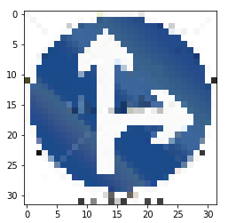

Training Data classes distribution
[ 180. 1980. 2010. 1260. 1770. 1650. 360. 1290. 1260. 1320.
1800. 1170. 1890. 1920. 690. 540. 360. 990. 1080. 180.
300. 270. 330. 450. 240. 1350. 540. 210. 480. 240.
390. 690. 210. 599. 360. 1080. 330. 180. 1860. 270.
300. 210. 210.]
Testing Data classes distribution
[ 30. 240. 240. 150. 210. 210. 60. 150. 150. 150. 210. 150.
210. 240. 90. 90. 60. 120. 120. 30. 60. 60. 60. 60.
30. 150. 60. 30. 60. 30. 60. 90. 30. 90. 60. 120.
60. 30. 210. 30. 60. 30. 30.]
Validation Data classes distribution
[ 60. 720. 750. 450. 660. 630. 150. 450. 450. 480. 660. 420.
690. 720. 270. 210. 150. 360. 390. 60. 90. 90. 120. 150.
90. 480. 180. 60. 150. 90. 150. 270. 60. 210. 120. 390.
120. 60. 690. 90. 90. 60. 90.]
I normalized the image using equation new_pixel = (pixel - 128)/ 128 to make the entire data set have zero mean and equal variance that makes optimizer much easier to proceed numerically.
Here is the image that looks like after normalization:
The model for image classification is a 7 layer Deep Neural Network with 2 convolution layer and 5 fully connected layer built on top of the LeNet.
| Layer | Description |
|---|---|
| Input | 32x32x3 RGB image |
| 1. Conv 5x5 | 1x1 stride, same padding, outputs 28x28x6 |
| RELU | |
| Max Pooling | 2x2 stride, output 14x14x6 |
| 2. Conv 5x5 | 1x1 stride, same padding, outputs 10x10x16 |
| RELU | |
| Max Pooling | 2x2 stride, output 5x5x16 |
| Flatten | Input 5x5x16. Output = 400 |
| 3. Fully connected | Input = 400. Output = 240. |
| RELU | |
| Dropout | Keep probability: 75% |
| 4. Fully connected | Input = 240. Output = 180. |
| RELU | |
| Dropout | Keep probability: 75% |
| 5. Fully connected | Input = 180. Output = 120. |
| RELU | |
| Dropout | Keep probability: 75% |
| 6. Fully connected | Input = 120. Output = 84. |
| RELU | |
| Dropout | Keep probability: 75% |
| 7. Fully connected | Input = 84. Output = 43. |
| RELU | |
| Dropout | Keep probability: 75% |
Started with the model purely using LeNet. 5-layer of Deep CNN.
Accuracy of testing data: 0.73
Made baseline model deeper by adding 2 more fully connected Layers.
Accuracy of testing data: 0.89
Made baseline model further deeper by adding 3 more fully connected Layers, and that makes the entire model 10-layer deep. However, I did not get further improvement on the testing data accuracy. I also tried to lower the learning rate and to increase the Epochs, still get the similar result. The model was very accurate in predicting the training data set (0.96) but on the validation/testing data set I was not able to get above 0.93.
Accuracy of testing data: 0.91
Added Dropout to mitigate over-fitting the model. With the dropout/regularization on the model, this time I was able to get the accuracy over 0.93 on the testing data set! I also have to increase the Epcohs from 15 to 50 since dropout makes model training much slower to converge.
Accuracy of testing data: 0.936
1.0000.9550.936Here are five German traffic signs that I found on the web:

| Image | Prediction |
|---|---|
| Caution | Caution |
| Go straight or right | Go straight or right |
| No entry | No entry |
| No passing | Vehicles over 3.5 metric tons prohibited |
| 50 km/h | 50 km/h |
| 30 km/h | 30 km/h |
The model was able to correctly guess 5 of the 6 traffic signs, which gives an accuracy of 83%. This compares favorably to the accuracy on the test set of 93.6%.
It made the wrong prediction on the 4th image (No passing). Here the is the comparsion of the new image (No passing) vs Vehicles over 3.5 metric tons prohibited (in traing data set).
1
| Probability | Prediction |
|---|---|
| 1.00 | Caution |
| 0.0 | .. |
2
| Probability | Prediction |
|---|---|
| 1.00 | Go straight or right |
| 0.0 | .. |
3
| Probability | Prediction |
|---|---|
| 1.00 | No entry |
| 0.0 | .. |
4
| Probability | Prediction |
|---|---|
| 0.504 | Vehicles over 3.5 metric tons prohibited |
| 0.449 | No passing |
| 0.04 | Slippery road |
| 0.0 | .. |
5
| Probability | Prediction |
|---|---|
| 0.97 | Speed limit (50km/h) |
| 0.02 | Wild animals crossing |
| 0.01 | Speed limit (100km/h) |
| 0.0 | .. |
6
| Probability | Prediction |
|---|---|
| 0.985 | Speed limit (30km/h) |
| 0.012 | Speed limit (80km/h) |
| 0.000062 | Speed limit (70km/h) |
| 0.0 | .. |